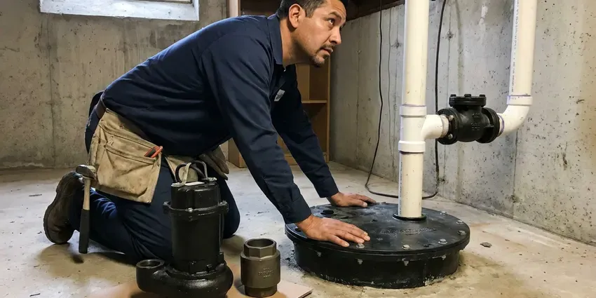

Tankless Water Heater Installation in Ridgeland, MS
Say goodbye to cold showers in Ridgeland, MS. Our expert team at DFM Plumbing specializes in tankless water heater installation, offering a modern solution for your hot water needs.
- Descaling Valves Included
- Gas Line Upgrades Included
- Modern Hot Water Systems
- Energy-Saving Systems

Get Your New Tankless System in Ridgeland, MS.
Call DFM Plumbing today for a consultation and discover the benefits of a tankless water heater for your home.
Professional Tankless Water Heater Installation in Ridgeland, MS
DFM Plumbing installs tankless water heaters that heat water on demand instead of keeping a large tank hot all day. We calculate peak flow in gallons per minute, check incoming water temperature and confirm your gas supply can handle up to 199,000 BTU. Then we install the unit, venting and isolation valves to the manufacturer's specifications.
Our expertise includes:
- Isolation valve kits and scale filters for hard water protection
- Code-compliant electrical and water line hookups.
- Careful sizing and venting for optimal performance.

Additional Plumbing Installation Services in Ridgeland, MS
We install water heaters, pumps, lines, and fixtures across Ridgeland, MS with precision workmanship that meets every local code.


Customers
Why Choose DFM Plumbing for Tankless Water Heater Installation in Ridgeland, MS?
Choosing the right plumbing partner for a significant upgrade like a tankless water heater is key for long-term satisfaction. DFM Plumbing brings years of experience to every installation, ensuring quality workmanship and reliable performance.
- Energy Efficiency, Tankless units heat water only when needed, which can lower your utility bills compared to traditional storage tanks.
- Endless Hot Water, Never run out of hot water again, even with several showers or appliances running at once.
- Scale Protection, Isolation valves and scale filters protect the heat exchanger from hard water.
Citywide Coverage
DFM Plumbing serves every neighborhood in Ridgeland and the surrounding communities for tankless water heater installation. Whether you are in the city center or on the outskirts, our team is ready to provide timely and professional service.
Experienced Team
Each DFM Plumbing technician is a specialist in modern plumbing, including the fine details of tankless systems. We take pride in precise installations that homeowners in Ridgeland can depend on for years to come.
Safety-First Approach
We conduct thorough inspections after every tankless installation to make sure everything is operating safely and efficiently. You can rest assured that your new system from DFM Plumbing meets high standards of safety and quality.
Trusted Certified Ridgeland Plumbing Services Professionals
At DFM Plumbing, we take pride in providing licensed, certified plumbing services throughout Ridgeland, MS. Backed by recognized industry credentials, our experienced plumbers combine technical skill with genuine customer care. Whether it is repair, installation, or maintenance, we follow strict safety and quality standards to deliver lasting results you can trust.
Call Us Now PHCC Plumbing Contractor Recognition
PHCC Plumbing Contractor Recognition Better Business Bureau (BBB) Accreditation
Better Business Bureau (BBB) Accreditation Angi Certified Pro
Angi Certified Pro ISO 9001 Quality Management Certification
ISO 9001 Quality Management CertificationDependable Tankless Water Heater Installation Services in Ridgeland, MS
Residential Tankless Water Heater Installation in Ridgeland
DFM Plumbing specializes in installing tankless water heaters for residential properties. We assess your home's hot water demands, family size and existing utility connections to recommend the most suitable unit, so you get the right capacity for your needs. Our installations are designed to be energy efficient, providing endless hot water while often lowering your monthly utility bills in Ridgeland.

Propane Tankless Water Heater Installation in Ridgeland
Many homes outside natural gas service areas rely on propane. DFM Plumbing is experienced in installing propane tankless water heaters, which require specific gas line sizing, regulator adjustments and venting. We make sure your propane system is installed correctly for maximum efficiency and safety, providing reliable hot water for your Ridgeland residence.
Tankless vs Tank Cost Comparison in Ridgeland, MS
Tankless installation costs more upfront than a standard tank because of the unit price, gas line upgrades and venting changes. Over time, lower standby energy losses and a longer expected lifespan offset part of that cost. Tankless units often last 15 to 20 years with proper descaling, compared with about 8 to 12 years for many tanks in hard water areas. We give you a side-by-side quote so you can decide what suits your budget.
Residential Tankless System Upgrades in Ridgeland
Upgrading your traditional hot water tank to a tankless system in Ridgeland can noticeably improve efficiency and comfort. We assess your home's hot water demands, existing plumbing and utility connections to recommend the best tankless model for your household size and usage patterns. Our team manages the entire conversion, including the safe removal and disposal of your old water heater, minimizing disruption to your daily routine.
Tank to Tankless Conversions in Ridgeland
Converting from a tank requires more than swapping units. A 40 gallon tank heater uses roughly 40,000 BTU, while a whole-home tankless unit may need up to 199,000 BTU, so the gas line usually needs to be upsized. Venting changes from a metal flue to PVC or stainless, and the unit moves to a wall location. We remove and haul away your old tank and patch the old flue penetration.
Recirculation Systems for Tankless Heaters in Ridgeland
Tankless heaters can take a few extra seconds to deliver hot water to distant fixtures. A recirculation pump or dedicated return line keeps hot water close to faucets, reducing wait time and water waste. Some units have built-in pumps with smart scheduling. We design the system to fit your plumbing layout and usage patterns.
Upgrading from Tank to Tankless in Ridgeland, MS
Making the switch from a traditional tank water heater to a tankless system involves more than simply swapping units. It often requires changes to gas lines, electrical wiring and venting. DFM Plumbing manages all aspects of this conversion, making sure all upgrades meet current codes and your new tankless unit performs optimally, giving you a modern hot water solution in Ridgeland, MS.

Tankless Water Heater Relocation in Ridgeland
Sometimes the ideal spot for a tankless water heater is not where your old tank was located. For homeowners in Ridgeland looking to free up space or improve access, DFM Plumbing offers professional tankless water heater relocation. This can involve rerouting gas or water lines and possibly electrical work, all handled with precision and to local codes by our experienced team.
Tankless Water Heater Installation Near Me in Ridgeland, MS
When you search for 'tankless water heater installation near me' in Ridgeland, MS, DFM Plumbing is your dependable local choice. We know the local plumbing and building codes well, so every installation is done right the first time.
Our local presence means faster response times and a team that understands the challenges and opportunities for tankless systems in Ridgeland. We are focused on bringing modern, efficient hot water to every home in our community.
DFM Plumbing at a Glance
- Fully licensed plumbing team covering Ridgeland, MS
- Same-day appointments and 24/7 emergency response
- Upfront, flat-rate pricing before work begins
- 4.8-star rated by 503+ Mississippi customers
Ridgeland Map
Ridgeland Information
- Population
- 24,459
- Area codes
- Local
- Service area
- Ridgeland and communities within 40 miles
- Nearby
- Madison, Jackson, Pearl, Clinton
Incoming water temperature shapes how a tankless unit performs in Ridgeland, MS, and hard water makes careful installation with descaling valves essential for a long service life.
Expert Services
Trust our professionals for reliable DFM Plumbing solutions in Ridgeland, MS.
Our Specialized Plumbing Services in Ridgeland, MS
At DFM Plumbing, we provide a complete range of plumbing services across Ridgeland, MS. From leak detection to full system installations, our team ensures fast, precise, and affordable service for both residential and commercial properties. Explore our core services below:


How Our Tankless Water Heater Installation Process Works in Ridgeland, MS
We follow a clear process so your tankless installation is sized right, installed safely and ready to go.
Request a Quote
Call (601) 265-9260 to schedule a site visit. We assess your fixtures, gas supply and venting options, then give you a written quote.
Install and Upgrade
We remove your old heater, upsize gas lines if needed and mount the new unit. Venting, water connections and isolation valves are installed to the manufacturer's specifications.
Test and Train
We fire the unit, check gas pressure and test hot water at several fixtures. Then we show you how to flush the system and register your warranty.
Frequently Asked Questions About Tankless Water Heater Installation in Ridgeland
The cost for tankless water heater installation in Ridgeland can range from $3,000 to $6,000, based on the unit type (gas or electric), brand, capacity and complexity of the installation, such as gas line upgrades or new venting. This price usually includes the unit and professional labor. We provide a detailed, no-obligation estimate after an on-site assessment.
Yes, a permit is usually required because the job involves gas, venting and water connections. We pull the permit and schedule the inspection.
We install leading tankless water heater brands known for their reliability and efficiency, including Rinnai, Navien, Noritz and Rheem. Our plumbers are trained and experienced with the particular requirements of each manufacturer to ensure strong performance.
Most tankless water heaters come with a manufacturer's warranty of 10 to 15 years on the heat exchanger and 3 to 5 years on parts. DFM Plumbing also provides a warranty on our installation labor, which we will spell out in your service agreement.
In Mississippi, plumbing and often gas or electrical permits are typically required for tankless water heater installation. DFM Plumbing handles all necessary permit applications and makes sure your installation passes all required inspections by local authorities.
Sizing a tankless water heater depends on your household's peak hot water demand, measured in gallons per minute (GPM), and the temperature rise needed. Our plumbers will assess the hot water fixtures in your home and review your usage patterns to recommend the appropriate GPM and BTU rating for your needs in Ridgeland.
Yes, tankless water heaters are very energy efficient in almost any climate. Long, hot and humid summers are the main stress on plumbing in Mississippi, and humidity keeps crawlspaces damp for much of the year. Since they only heat water on demand, they avoid the standby heat loss common with traditional tanks, which can be significant even in milder seasons.
We install Rinnai, Navien, Noritz and Rheem tankless water heaters. Each brand offers different features, efficiency levels and warranties.
What People Are Saying About Our Plumbing Experts?

Emily R.
I called DFM Plumbing for plumbing repair, and the technician was fast, polite, and thorough. They explained the problem clearly and fixed it the same day. I will definitely hire them again. Highly recommended!
Plumbing Repair · Brandon, MS
James P.
Our commercial plumbing system had a leak under the sink, and DFM Plumbing handled it professionally. The plumbers arrived quickly and restored everything without disruption to our customers.
Commercial Plumbing · Pearl, MS
Sofia M.
Two new toilets installed in one visit, no mess left behind, and the tech even adjusted a faucet he noticed was dripping. Fair pricing and really friendly.
Toilet Installation · Vicksburg, MS
Patricia H.
We had a slab leak that two other companies could not find. DFM Plumbing located it in under an hour, explained our options, and the price matched the quote to the dollar.
Slab Leak Repair · Madison, MS
Mark T.
When our office needed drain cleaning, DFM Plumbing provided quick, reliable service. The plumber arrived on time and made sure every drain flowed perfectly before leaving. Very satisfied.
Drain Cleaning · Clinton, MSRobert G.
The trenchless sewer replacement saved our front yard. They walked us through the camera inspection footage first so we knew exactly what we were paying for.
Sewer Line Replacement · Clinton, MS